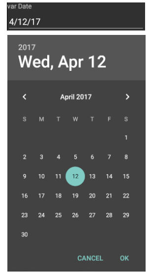
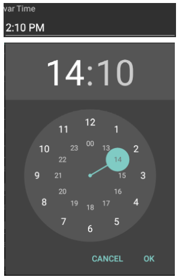
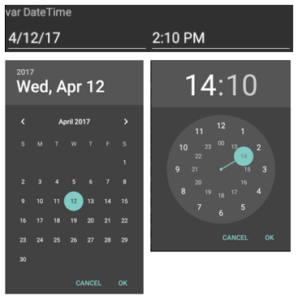
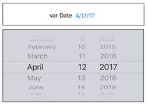
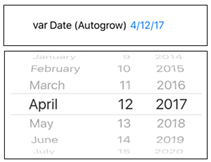
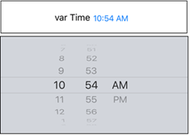
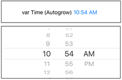
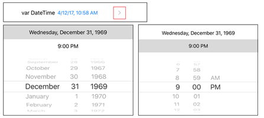
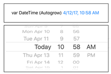

When a developer includes an editable attribute or variable based on DateTime data type (or its variants Date data type and Time domain), GeneXus automatically incorporates a picker in the application form where the end user is able to select the value associated with that field.
The picker follows the Material Design guidelines and displays it as a pop-up tiny window on the current form.
More information in HowTo: Adding Material Design to Android applications.
| Type |
Runtime effect and behavior |
| Date |
It displays a prompt with a calendar where is possible to select the date value.

|
| Time |
It displays a prompt with a clock to select the desirable time.

|
| DateTime |
It includes two independent fields for edit the Date and the Time.
 |
The picker follows the Apple's Human Interface guidelines and displays it as a wheel control on the current form.
| Type |
Runtime effect and behavior |
| Date |
By default, It displays a wheel in the bottom of the panel where it's possible to set the date value.

Also, if the Auto Grow property is enabled on the editable field, the wheel will be displayed in-line.

|
| Time |
By default, it displays a wheel to select the hour, minutes and AM/PM in the bottom of the panel.

Analogously to the previous scenario, It can be displayed in-line.

|
| DateTime |
By default, It puts a prompt where it's possible to edit the Date and the Time independently by selecting one of them.

Analogously to the previous scenario, It can be displayed by both wheels in-line.
In this case, the date is fully selected (not by month, day and year).
 |
|